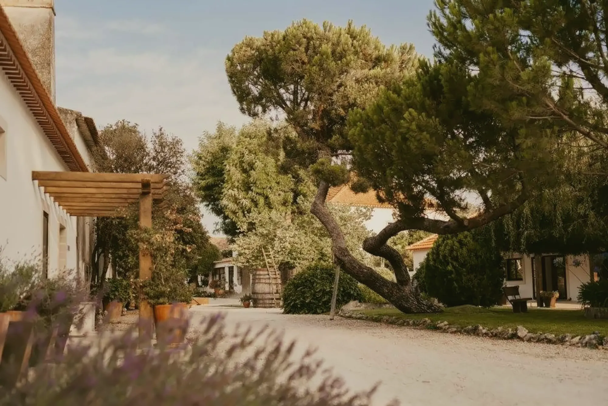
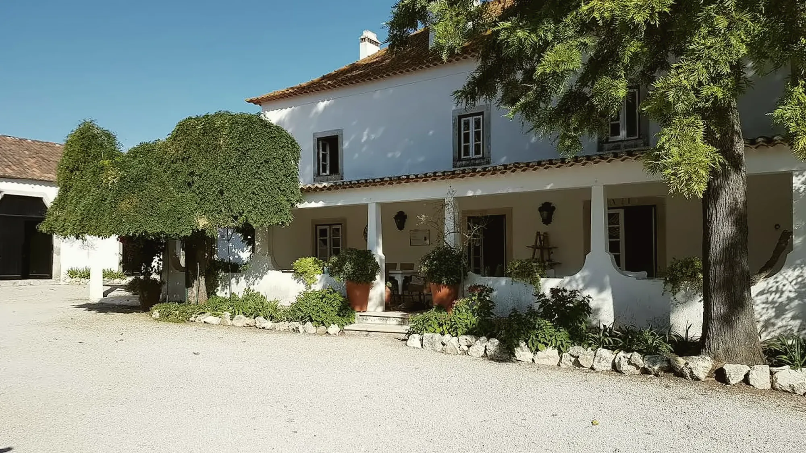
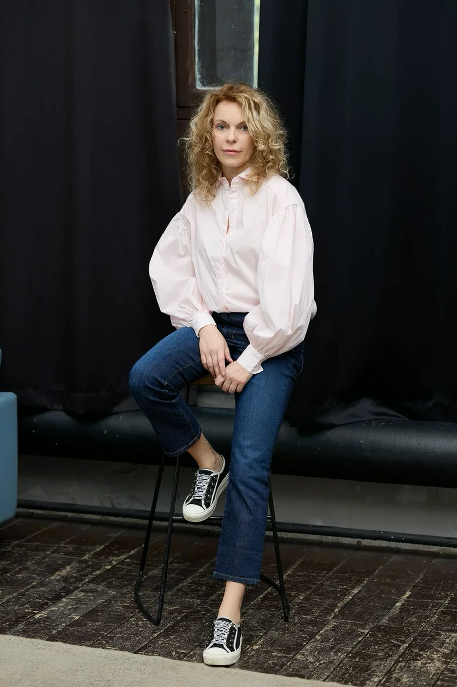
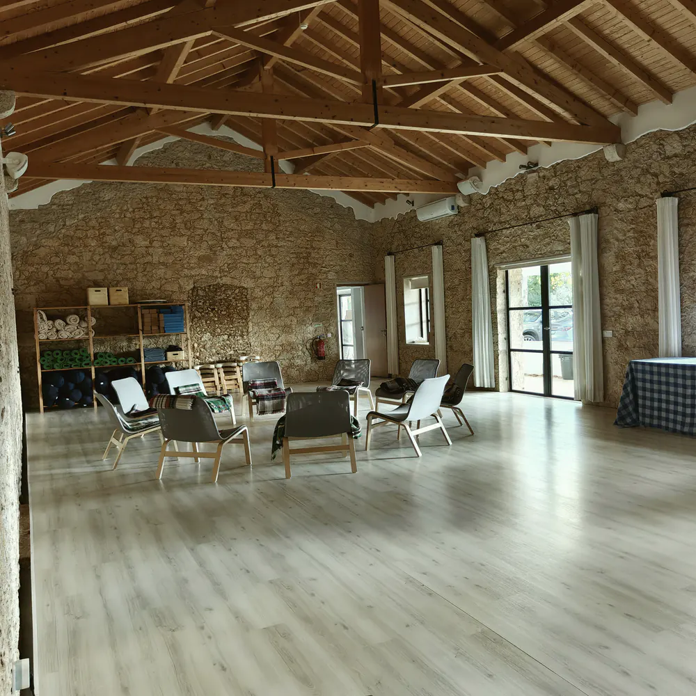
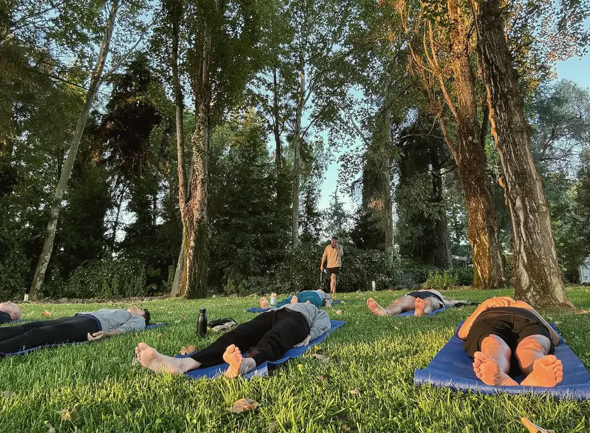
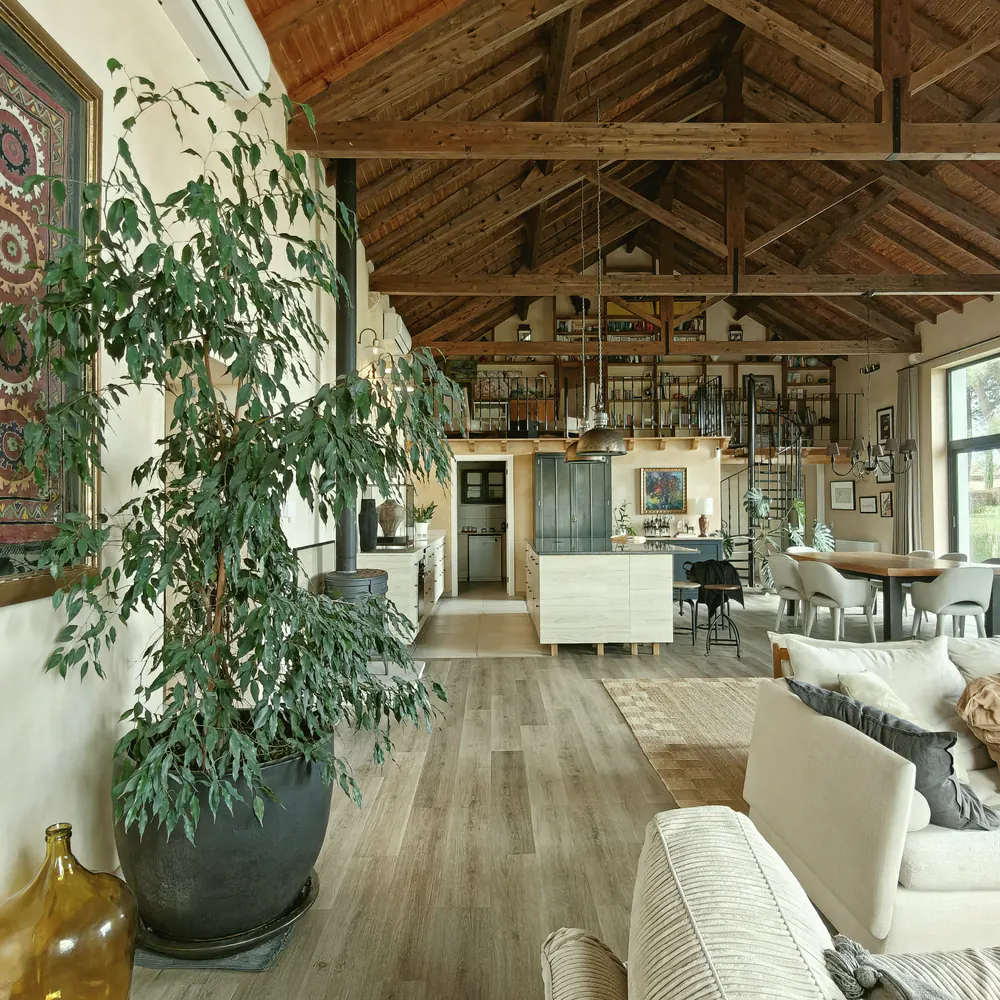

Выводы за 18 лет практики семейного психолога: как сохранить страсть и любовь
Подкаст Алексея Голубева


Авторская психологическая программа Марины Нахаловой
Искусство раскрывать свою истинную силу
Семь дней в уединённой усадьбе. Пять из них — глубокая психологическая работа в небольшой группе.
Авторская программа о раскрытии внутренних даров, силы и потенциала.
Психология, системные расстановки, телесные практики и природа. Это не wellness-ретрит и не мотивационный тренинг — главное здесь работа с Мариной.

Психолог, психоаналитический и системный терапевт, специалист по расстановочной работе.
Помогает человеку обнаружить и раскрыть его собственный дар.
Подкаст Алексея Голубева

Орхан Мустафаев

«Новый Мир» с Ниной Серебренниковой
Направления подготовки: психология управления, психоаналитическая терапия, схема-терапия, системная семейная терапия и расстановочная работа. Образование и подготовка заняли 15 лет.
Одиннадцать лет назад Марина создала авторскую программу «Истинная Я» — её прошли более 5 000 женщин. Позднее появилась программа «Путь к себе», которая объединила около 800 мужчин.
За этими цифрами — тысячи человеческих историй: обретения любви и создания семьи, смелых профессиональных решений, найденного призвания и внутренней целостности.
В основе — авторский метод Марины: три уровня работы и четыре этапа.
Собственный опыт, детские переживания, внутренние конфликты и убеждения.
Как мать и отец повлияли на чувство безопасности и уверенность. Не поиск виноватых, а принятие своей истории.
Семейные убеждения и модели, которые передаются из поколения в поколение: сохранить ценное, пересмотреть лишнее.
Понять причины внутренних конфликтов, страхов и повторяющихся ситуаций.
Бережно поработать с подавленными чувствами.
Переосмыслить отношения с собой и близкими.
Прийти к осознанным решениям и опоре на себя.
Программа работает и с лиминальностью — состоянием перехода, когда прежние ориентиры утратили значение, а новые ещё не сложились.
Пять из них, с 19 по 23 апреля, — психологическая работа с Мариной.
Размещение в усадьбе, знакомство с пространством и участниками, приветственный ужин.

Первый день психологической работы: по-новому взглянуть на себя и собственную историю.

Отношения, чувства и невидимые связи, которые влияют на нашу жизнь.

Проживание и принятие собственного опыта. Возвращение к телу.

История рода как источник силы, стойкости и внутренней опоры.

Завершающий день работы: найти новое направление. Вечером — гала-ужин.

Неспешное утро, завтрак и прощание.
Всё проходит на территории усадьбы: приглашённые специалисты приезжают к участникам.
Уединённая усадьба среди лесов и холмов Португалии. Покидать её не нужно: всё проходит на месте.
Преимущественно вегетарианское, из свежих фермерских продуктов.
По желанию — белое мясо или рыба. Аллергии и ограничения уточним в анкете.
В группе не больше 25 человек, каждый проходит предварительное знакомство.
Вне привычных ролей и достижений все равны. По вечерам — огонь, разговоры или тишина.
Тем, кто чувствует, что способен на большее, и готов к глубокой работе с собой.
Цена за всю программу на одного участника.
Оплата — только после знакомства и подтверждения участия.
Одноместное размещение
Комната только для вас.
3 500 €
за всю программу
Двухместное размещение
Комната на двоих — с другим участником программы.
3 000 €
за всю программу, с каждого участника
Количество мест ограничено. Отправка анкеты не гарантирует участие.
Начните со знакомства: девять коротких вопросов, около пяти минут.
Анкету читает Марина. Ответы видят только она и организаторы программы.
Она лично читает каждую заявку. Мы напишем вам, чтобы договориться об онлайн-встрече.
Отправка анкеты не гарантирует участие: решение принимается после знакомства и оно взаимное.